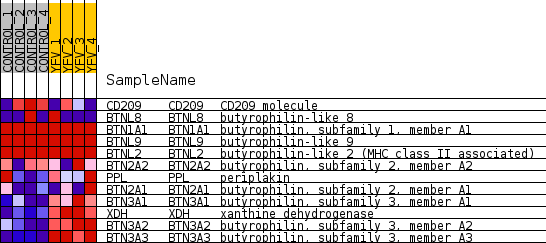
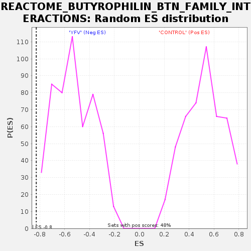

Profile of the Running ES Score & Positions of GeneSet Members on the Rank Ordered List
| Dataset | MATRIZ_GSE99081_collapsed_to_symbols.gsea_CLASE_99081.cls#CONTROL_versus_YFV |
| Phenotype | gsea_CLASE_99081.cls#CONTROL_versus_YFV |
| Upregulated in class | YFV |
| GeneSet | REACTOME_BUTYROPHILIN_BTN_FAMILY_INTERACTIONS |
| Enrichment Score (ES) | -0.8286715 |
| Normalized Enrichment Score (NES) | -1.5644208 |
| Nominal p-value | 0.0 |
| FDR q-value | 0.08749617 |
| FWER p-Value | 0.977 |
| SYMBOL | TITLE | RANK IN GENE LIST | RANK METRIC SCORE | RUNNING ES | CORE ENRICHMENT | |
|---|---|---|---|---|---|---|
| 1 | CD209 | CD209 molecule | 2271 | 0.445 | -0.0849 | No |
| 2 | BTNL8 | butyrophilin-like 8 | 6988 | 0.012 | -0.3741 | No |
| 3 | BTN1A1 | butyrophilin, subfamily 1, member A1 | 8067 | 0.000 | -0.4405 | No |
| 4 | BTNL9 | butyrophilin-like 9 | 9004 | 0.000 | -0.4982 | No |
| 5 | BTNL2 | butyrophilin-like 2 (MHC class II associated) | 9007 | 0.000 | -0.4983 | No |
| 6 | BTN2A2 | butyrophilin, subfamily 2, member A2 | 10518 | -0.061 | -0.5838 | No |
| 7 | PPL | periplakin | 13088 | -0.312 | -0.7035 | Yes |
| 8 | BTN2A1 | butyrophilin, subfamily 2, member A1 | 13776 | -0.406 | -0.6957 | Yes |
| 9 | BTN3A1 | butyrophilin, subfamily 3, member A1 | 15935 | -1.372 | -0.6593 | Yes |
| 10 | XDH | xanthine dehydrogenase | 15981 | -1.511 | -0.4755 | Yes |
| 11 | BTN3A2 | butyrophilin, subfamily 3, member A2 | 16007 | -1.627 | -0.2761 | Yes |
| 12 | BTN3A3 | butyrophilin, subfamily 3, member A3 | 16113 | -2.351 | 0.0078 | Yes |

